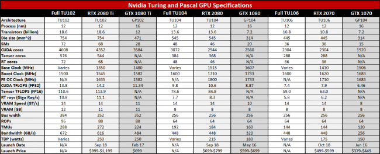
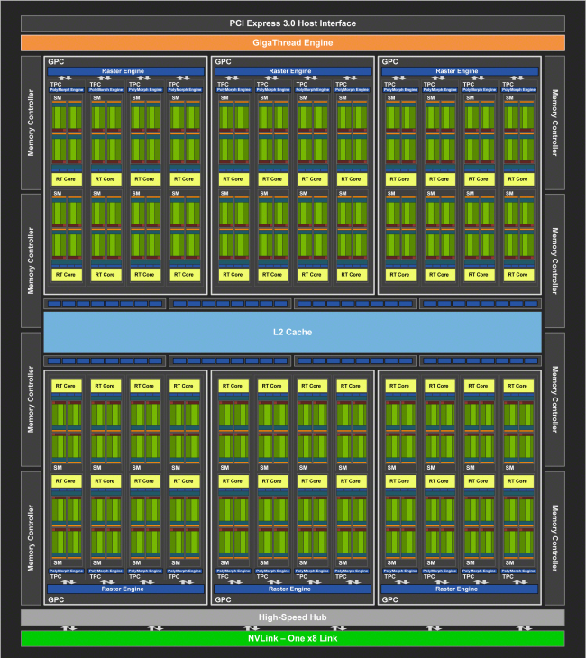
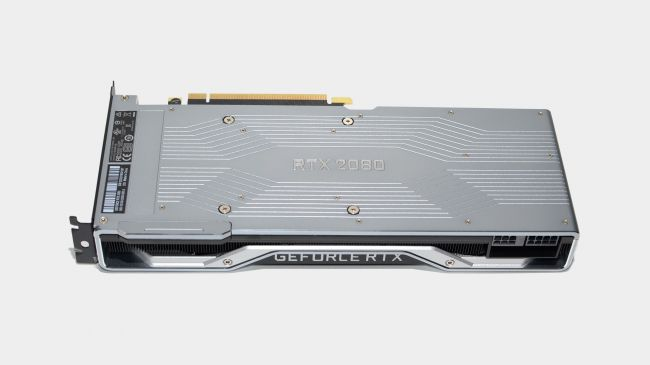
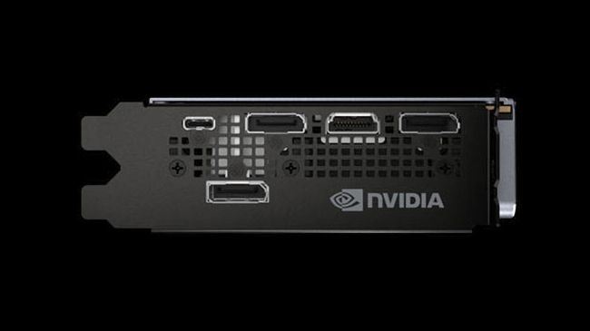
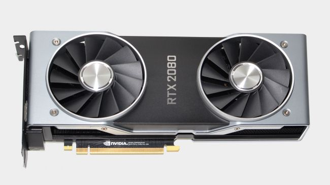

Nvidia GeForce RTX 2080: benchmark, release date, and everything you need to know
Nvidia launched its next-generation GeForce RTX 20-series graphics cards on September 20, starting with the GeForce RTX 2080 and GeForce RTX 2080 Ti, with the GeForce RTX 2070 slated to launch on October 17. These cards all use new Nvidia Turing architecture, which boasts more cores than the previous generation Pascal architecture, along with significant updates that should deliver more performance per core. Also included are new technologies to enable real-time ray tracing in games, and deep learning Tensor cores. There's a lot to cover, and Nvidia is rightly calling this the most significant generational upgrade to its GPUs since the first CUDA cores in 2006. Turing promises better performance than existing GPUs, and has the potential to fundamentally change what we expect from graphics. Here's everything you need to know about the GeForce RTX 2080, the Turing architecture, pricing, specs, and more.
Nvidia GeForce RTX 2080: benchmark and review
Nvidia has announced three GeForce RTX models so far: the RTX 2080, RTX 2080 Ti, and RTX 2070. We don't know when or even if lower tier cards will exist. Most likely, but they may not arrive until 2019. The GeForce RTX 2080 officially launched September 20 and is now available, along with the beefier and substantially more expensive 2080 Ti model. GeForce RTX 2080 cards are available for purchase, but while the reference pricing supposedly starts at $699, most models are currently closer to the $799 Founders Edition pricing. Here's our real-time pricing list for RTX 2080 cards from the major graphics card vendors: It's not all good news for the GeForce RTX 20-series, as pricing has increased substantially. Call it a lack of competition (AMD's GPUs already struggle to compete against the 10-series parts), or the cryptocurrency bubble bursting (there are reportedly a lot of 10-series graphics cards left to sell), or just plain greed. The bottom line is that the launch price on the GeForce RTX 2080 Founders Edition is 14 percent higher than the launch price of the outgoing GTX 1080, 45 percent higher than the current $549 official MSRP for the 1080 FE, and a staggering 74 percent higher than the least expensive GTX 1080 card right now. Even with the higher pricing, the initial batch of cards is largely sold out. Whether that's high demand or limited supply (or both) is tough to judge, but availability and pricing should improve over the coming weeks.
 Performance needs to be impressive to justify the price, and right now that isn't the case. Nvidia claimed the GeForce RTX 2080 would be on average 50 percent faster than the GTX 1080. 50 percent more performance for 74 percent more money isn't a great bargain, though diminishing returns is typical as you move up the product stack, and we've said the same about Titan cards and other extreme GPUs in the past. The real problem is that in our own testing, with the modestly overclocked GeForce RTX 2080 Founders Edition, the RTX 2080 basically ends up tied with the GTX 1080 Ti, while costing $150 more.
The difficulty with assessing performance is that the GeForce RTX 2080 has a lot of new features, including RT cores for ray tracing and Tensor cores for deep learning (eg, DLSS). Both have a lot of potential, but games that leverage those features are not yet available. In the future, the GeForce RTX 2080 may end up performing much better than the 1080 and 1080 Ti, but in the present the gains are far more marginal
Performance needs to be impressive to justify the price, and right now that isn't the case. Nvidia claimed the GeForce RTX 2080 would be on average 50 percent faster than the GTX 1080. 50 percent more performance for 74 percent more money isn't a great bargain, though diminishing returns is typical as you move up the product stack, and we've said the same about Titan cards and other extreme GPUs in the past. The real problem is that in our own testing, with the modestly overclocked GeForce RTX 2080 Founders Edition, the RTX 2080 basically ends up tied with the GTX 1080 Ti, while costing $150 more.
The difficulty with assessing performance is that the GeForce RTX 2080 has a lot of new features, including RT cores for ray tracing and Tensor cores for deep learning (eg, DLSS). Both have a lot of potential, but games that leverage those features are not yet available. In the future, the GeForce RTX 2080 may end up performing much better than the 1080 and 1080 Ti, but in the present the gains are far more marginal
Which GeForce RTX 2080 card should I buy?
We've only tested the GeForce RTX 2080 Founders Edition at present, but we're working to get additional 2080 cards in for review. While we can't definitively state which is best right now, based on what we've seen in the past, most cards will be of a similar quality, with only minor differences in clockspeeds, warranty, lighting, and other elements. Unless you've got a high-end PC just waiting for a new graphics card, we can't recommend paying $100 extra for a Founders Edition. Yes, it's the second fastest graphics card now, but in existing games it's effectively tied with the GTX 1080 Ti. If you've watched the videos showing real-time ray tracing and can't stand the thought of going another minute without the improved shadows and reflections it will provide in future games, the GeForce RTX 2080 Founders Edition is certainly a nice looking card and runs well, and in general any 2080 should perform similarly. However, all the currently released GeForce RTX 2080 cards basically carry an early adopter tax of sorts.
GeForce RTX 2080 specifications
GeForce RTX 2080 specifications Nvidia unveiled many core details of the Turing architecture at SIGGRAPH, and followed up by providing further information on the Turing architecture that powers the GeForce RTX 2080 at Gamescom. It revealed the full specs for the GeForce RTX graphics cards as well, so after much completely bogus speculation (none of the 'rumors' leading up to the RTX launch were correct), we now know the actual specifications.
The number of CUDA cores in the GeForce RTX 2080 has increased by 15 percent compared to the GTX 1080, and while the base clockspeed dropped slightly the boost clock is nearly the same, and 4 percent higher in the case of the GeForce RTX 2080 Founder Edition. In theoretical TFLOPS (that's trillions of floating-point operations per second), the GeForce RTX 2080 FE is 20 percent faster than the GTX 1080 FE. However, the architectural enhancements in Turing (see below) could make for a much bigger leap in generational performance than that. Elsewhere, there are slightly more texturing units (TMUs), and ROPS counts remain the same. Along with the faster GPU cores, Nvidia equips all the new RTX models with 14 GT/s GDDR6, improving bandwidth for the GeForce RTX 2080 FE by 40 percent compared to the 1080 FE's GDDR5X. There are also other tweaks to the memory subsystem that should further improve performance. Besides the faster cores and memory, the Turing architecture adds Tensor cores for deep learning and RT cores for real-time ray tracing. Both have the potential to dramatically change what we can expect from future games in terms of graphics.

Turing architecture overview
While we have specs for the GeForce RTX 2080's CUDA cores, GDDR6, Tensor cores, and RT cores, there's a lot more going on with the GeForce RTX and Turing architecture. We've provided a deep dive into the Turing architecture elsewhere, but here's the short summary. Nvidia has reworked the SMs (streaming multiprocessors) and trimmed things down from 128 CUDA cores per SM to 64 CUDA cores. The Pascal GP100 and Volta GV100 also use 64 CUDA cores per SM, so Nvidia has standardized on a new ratio of CUDA cores per SM. Each Turing SM also includes eight Tensor cores and one RT core, plus four texturing units. The SM is the fundamental building block for Turing, and can be replicated as needed. For traditional games, the CUDA cores are the heart of the Turing architecture. Nvidia has made at least one big change relative to Pascal, with each SM able to simultaneously issue both floating-point (FP) and integer (INT) operations—and Tensor and RT operations as well. Nvidia says this makes the new CUDA cores "1.5 times faster" than the previous generation, at least in theory. Nvidia's preview benchmarks showed an average performance increase of around 50 percent for the GeForce RTX 2080 over the GTX 1080, while our in-house benchmarks give a 38 percent average improvement at 4k. However, once DLSS and ray tracing games start showing up, and potentially with some driver tuning, we could see the gap widen over the coming months. All Turing GPUs announced so far will be manufactured using TSMC's 12nm FinFET process. The TU104 used in the GeForce RTX 2080 has a maximum of 48 SMs and a 256-bit interface, with 13.6 billion transistors and a die size measuring 545mm2. That's a huge chip, larger even than the GP102 used in the 1080 Ti (471mm2 and 11.8 billion transistors), which likely explains part of the higher pricing. The GeForce RTX 2080 disables two SMs but keeps the full 256-bit GDDR6 configuration. TSMC's 12nm process is a refinement of the existing 16nm process, perhaps more marketing than a true die shrink. Optimizations to the process technology help improve clockspeeds, chip density, and power use—the holy trinity of faster, smaller, and cooler running chips. TSMC's 12nm FinFET process is also mature at this point, with good yields, allowing Nvidia to create such large GPU designs. Looking forward, TSMC is readying its 7nm process for full production, and we should see it in a limited fashion by the end of the year (eg, for AMD's Vega 7nm professional GPUs). Don't be surprised if late 2019 sees the introduction of a die shrink of Turing, bringing sizes down to more manageable levels.
What the RT cores and ray-tracing mean for games
Why is ray-tracing such a big deal, and what does it mean for games? We wrote this primer on ray-tracing when Microsoft unveiled its DirectX Ray Tracing (DXR) API. DXR hasn't reached the final public revision yet, but that's expected to happen with the Windows 10 October 2018 update. Nvidia clearly had a lot of input on DXR, and while initial demonstrations like the above Star Wars clip used a DGX-Station with four GV100 GPUs to achieve 'cinematic' 24fps results, Turing is clearly what Nvidia was aiming for. Not only can a single Turing GPU run the same demonstration as the DGX-Station—which only costs $69,000 if you're wondering—but it can supposedly do so at a higher framerate. That's because the RT cores in Turing are roughly ten times faster for ray tracing than using compute shaders to accomplish the same work. However, doing full ray tracing for real-time games is still a bit impractical. Nvidia instead suggests using the RT cores for hybrid rendering. Traditional rasterization handles the geometry and textures, while ray tracing provides lighting and shadows, reflections, refractions, ambient occlusion, and other effects. At least 11 games have announced support for Nvidia's RTX ray tracing. Here's the current list:
Several of these games should release in 2018, while others are coming in 2019. Shadow of the Tomb Raider launched without RTX effects enabled, with a post-launch patch planned for the feature. While that's unfortunate, getting games that support brand new hardware features within weeks of the hardware launch would still be much faster than the usual rate of adoption.
How machine learning and the Tensor cores affect graphics
If you're thinking the Tensor cores are pointless when it comes to 'real' graphics work, you're wrong. Deep learning and AI are revolutionizing many industries, and games are another potential market. But how can the Tensor cores help with graphics? Nvidia has specifically talked about DLSS, Deep Learning Super Sampling, a new AI-based anti-aliasing algorithm that can offer improved image quality compared to other AA algorithms like TAA (Temporal Anti-Aliasing). The idea is to train a neural network with high quality AA images as the 'ground truth' model—the desired result. Once trained, DLSS can provide real-time enhancements like the removal of jaggies, plus it can also combine resolution upscaling with anti-aliasing. There are two modes available, DLSS where images are upscaled and anti-aliased from 1080p to 4k, and DLSS 2X where no upscaling takes place and the algorithm only handles the removal of jaggies. Nvidia's aim is to provide slightly better image quality compared to 4k with TAA (temporal anti-aliasing), with substantially higher performance.
The GeForce RTX 2080 Founders Edition
Nvidia has always provided 'reference' designs for its GeForce graphics cards, but starting with the 10-series the name was changed to Founders Edition. With the GeForce RTX 2080 and other 20-series GPUs, Nvidia is changing things again. There will be graphics cards running Nvidia's reference clocks, but the GeForce RTX Founders Edition models will now come factory overclocked (by 90MHz). The GeForce RTX 2080 Founders Edition has also been completely redesigned, with improved cooling, power deliver circuitry, dual axial fans, and more. Graphics cards with blowers will still exist, but those will come from Nvidia's AIB partners. The dual fans should reduce noise levels while providing better cooling than a single blower fan, but a blower may be a better choice for anyone with a smaller case. The GeForce RTX 2080 Founders Edition has a rated power use of 225W. However, the RTX cards also include a VirtualLink connector (see below) that can draw an additional 35W when in use. To handle the increased power needed for overclocking and VirtualLink, the RTX 2080 FE includes both an 8-pin and 6-pin PCIe power connectors. Combined with the 75W available from the PCIe x16 slot, that potentially allows the card to draw up to 300W while remaining in spec (though we expect it won't normally get that high without additional end-user overclocking). The Founders Edition will also carry a premium price, $100 more than the base price of the Nvidia GeForce RTX 2080. Since these are generally the first cards to hit retail, it also makes for a hefty early adopter fee. It's not clear whether Nvidia will offer a reference design similar to the FE to its partners, or if the reference design only refers to the circuit board and core components, with cooling left up to the graphics card vendors.
Nvidia GeForce RTX 2080: NVLink and SLI support
Fans of multi-GPU solutions will be glad to know that SLI is still around, and it's getting an upgrade in performance. Gone is the old SLI connector, replaced by a new NVLink connection. NVLink will support substantially higher throughput (50GB/s for the GeForce RTX 2080, compared to 4GB/s on the old HB SLI bridge), though how this will affect gaming performance isn't clear. A lot of games in the past couple of years have skipped multi-GPU support, and that doesn't seem likely to change. The NVLink bridge cements a shift that already took place with the HB bridge, with only 2-way SLI being supported. That's for the best, considering support for 3-way and 4-way SLI in games has been even worse than 2-way SLI support. Nvidia offers two NVLink connector options, one with 3-slot spacing and one with 4-slot spacing. Something else to consider is that the ray tracing and deep learning algorithms offered on Turing should be able to scale with multiple graphics cards. Nvidia took that approach with PhysX, and running ray tracing or other effects on a second GPU could provide a great way to enhance the way games look without killing performance. Nvidia hasn't said anything about offloading ray tracing, DLSS, or any other work to a second GPU, however, so this is speculation on our part for now.
GeForce RTX 2080 will support native 8K60
Display connection standards are ever-evolving, and the GeForce RTX 2080 and other RTX cards add several new options. Perhaps the biggest addition is VirtualLink, a USB Type-C connection that includes USB 3.1 Gen2 data along with HBR3 video and power. The port is designed to allow a single cable to power a VR headset over one wire. The DisplayPort connectors have also been updated to 1.4a with HBR3, so 8K60 (7680x4320 at 60Hz) with a single connector is possible, though it requires 4:2:0 subsampling. Notably missing from the video output list is HDMI 2.1, which was released in November 2017. Turing keeps things at HDMI 2.0b, so 4K60 is still the limit. HDMI 2.1 allows for uncompressed 8K60 and 4K120, thanks to the massive 48Gbps transmission bandwidth. Not that most of users are going to have 8K displays anytime soon.
Parting thoughts
Nvidia's Turing architecture and the GeForce RTX 2080 line of graphics cards have the potential to completely change what we expect from our GPUs. Nvidia took its already excellent Pascal GPU and found ways to make it even more efficient, then tossed in the kitchen sink by way of the RT cores and Tensor cores. The demonstrations of real-time ray tracing are extremely impressive on a technical level, and multiple developers commented that using the RTX features freed up a lot of artist time and make the process of level design much easier. The problem is that the new features are only going to be available on GeForce RTX cards, so developers can't simply stop doing things the 'old fashioned' way. For the next five years at least, most games that use ray tracing effects will need to have a fallback rendering method for older GPUs. And by the time ray tracing goes mainstream—because let's not kid ourselves, even with a base price of $699 for the 'reference' GeForce RTX 2080, these are extremely high-end graphics cards—there will inevitably be faster models available. Should you jump on the GeForce RTX 2080 bandwagon? If you're a gaming enthusiast, or simply have deep pockets, the new graphics cards look to raise the bar both on performance and features. We're extremely excited to see the next generation of games that put these cards to good use. But we also play and enjoy a lot of games that don't even attempt to include cutting edge graphics. The best reason to buy a new graphics card is when your existing graphics card is no longer doing its job adequately. For some, that will be when games can't run at 30fps and 1080p at low to medium quality, while others have been wanting a GPU that can 'guarantee' 60fps or higher at 4k for years. And when you find it's time to upgrade, check our best graphics card guide for advice on which GPU is right for your needs.
Sumber: https://www.pcgamer.com/rtx-2080-everything-you-need-to-know/